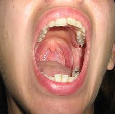

मुख

- मुख अधिकांश जीव जंतुओं के शरीर का आवश्यक अंग हैं।
- इस लेख में मानव शरीर से संबंधित उल्लेख है। मुख आहारनाल का अंग होते हैं।
- मुख एक अनुप्रस्थ काट के रूप में होता है तथा दो माँसल होठों से घिरा रहता है तथा मुखग्रासन गुहिका में खुलता है। दोनों होठ मुख को खोलने और बन्द करने के अतिरिक्त भोजन को पकड़ने तथा बोलने में सहायक होते हैं।
- मनुष्य की मुख ग्रासन गुहिका सदैव लार नामक तरल से नम बनी रहती है। मुख ग्रासन गुहिका मुखगुहा तथा ग्रसनी के मध्य होती है। इसका बाहरी भाग मुखगुहा तथा पश्च भाग ग्रसनी कहलाता है।
- मुख गुहा की छत को तालू कहते हैं। यह मुख गुहा को श्वसन मार्ग से अलग करती है।
- तालू का अग्रभाग अस्थि निर्मित होता है। इसे कठोर तालू कहते हैं। इसमें पैलेटाइन अस्थि तथा मैक्सिला तथा प्री—मैक्सिला के पैलेटाइन प्रवर्ध होते हैं। तालू का पिछला भाग कोमल तालू कहलाता है। इसका निर्माण उपास्थि से होता है। इसका पिछला भाग काग या अधिजिह्वा के रूप में मुखगुहा या ग्रसनी गुहा के मध्य लटका रहता है।
- ग्रसनी के पार्श्वों में एक जोड़ी गलांकुर या टाँसिल्स स्थित होते हैं। ये लसिका ऊतक से निर्मित होते हैं।